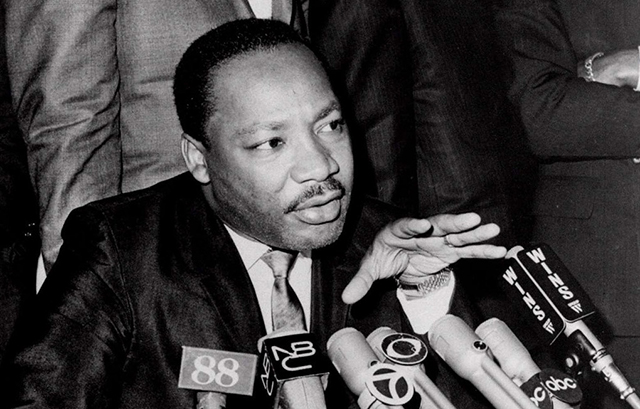

Photo galleries
Dr. Martin Luther King Jr. establishes himself as the national leader of the civil rights movement, leading boycotts and staging protests against segregation in the South.
Voting rights becomes the focus of King and other civil-rights leaders. They organize protests across the nation, bringing more attention to their efforts - and more violent responses from opponents.

King's opposition to the Vietnam War makes headlines while his battle for civil rights continues. But on April 4, 1968, an assassin's bullet ended his crusade.
<%= t.include("./_foot.html") %>